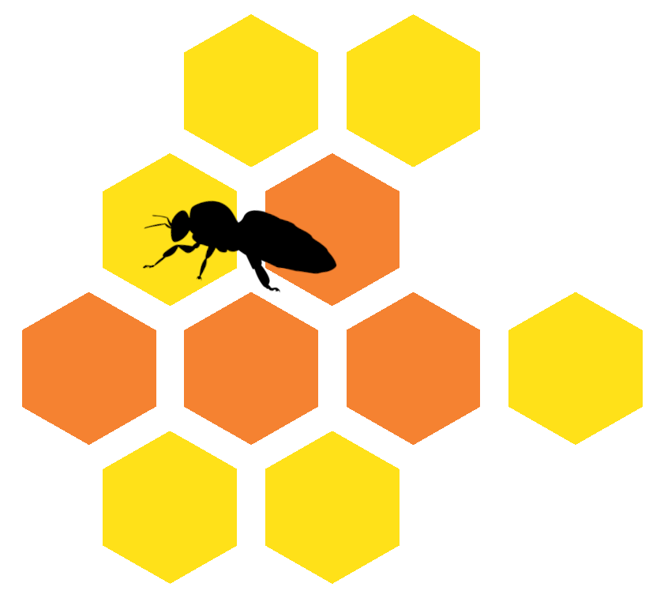
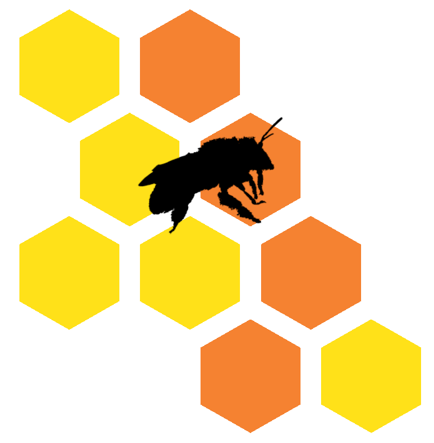
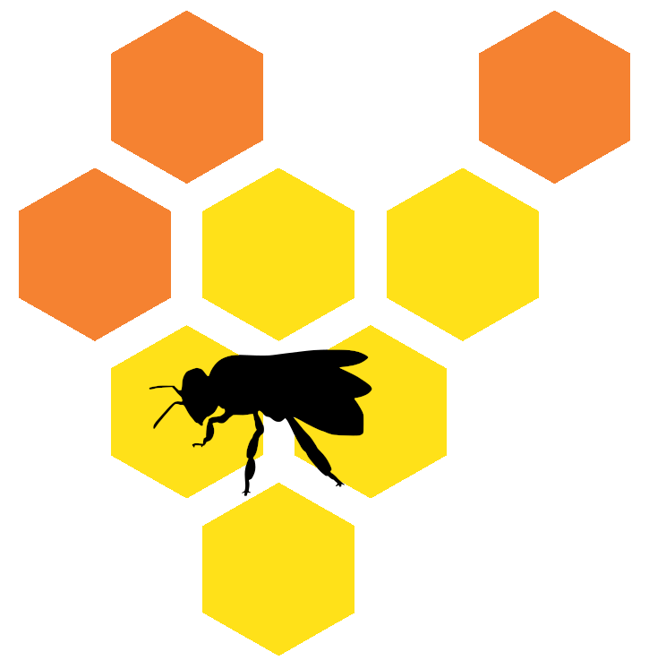
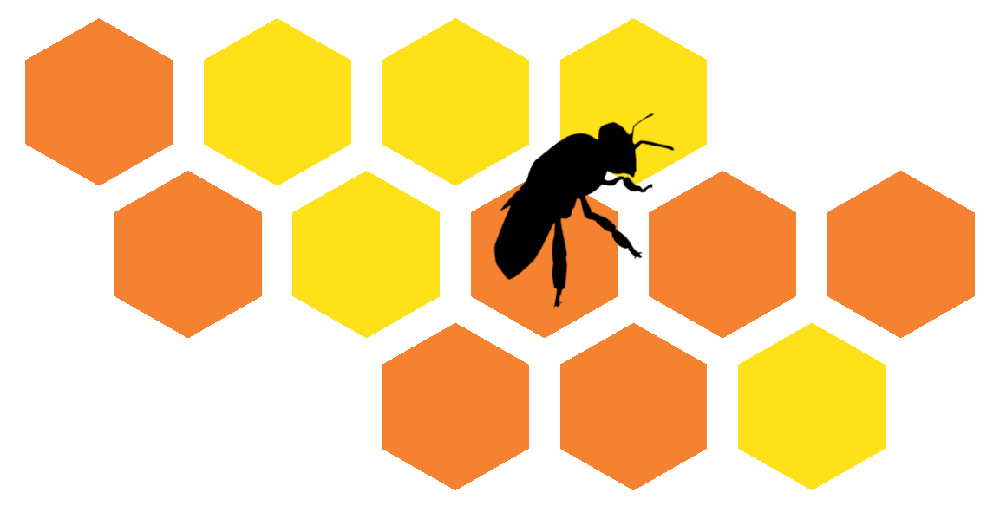
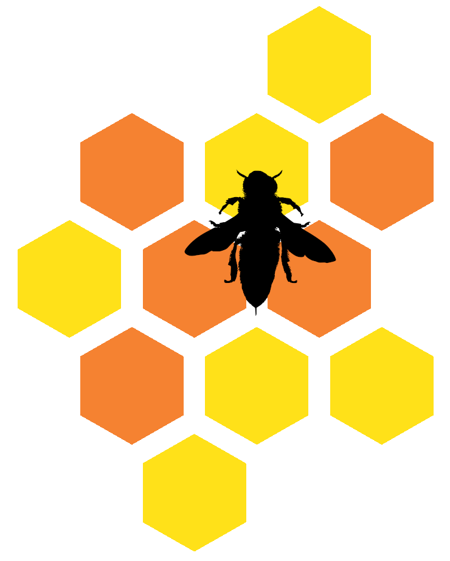
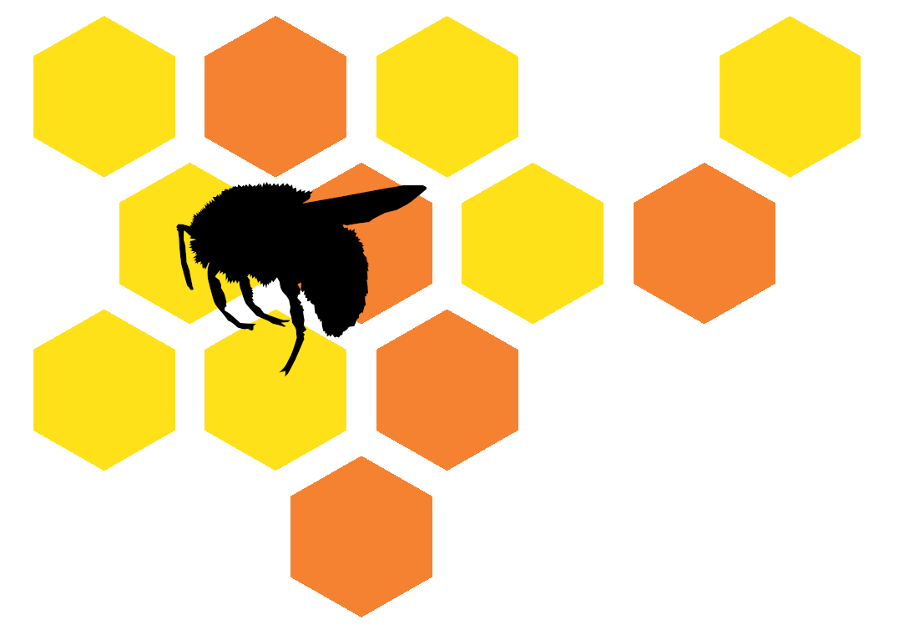

bee_colonies_df <- read.csv("bats_and_bees/honey_bee.tsv",
sep = "\t", row.names = 1, check.names = FALSE)Honey bee colonies

Next we have a file (honey_bee.tsv) that contains information on the number of Honey Bee colonies in 4 different USA states. It is temporal data containing information on the 4 quarters for the years 2015-2018.
For more details and even more data please see the following link: https://www.kaggle.com/datasets/kyleahmurphy/nass-honey-bee-20152021
Solutions are in the expandable boxes. Try your best to solve each challenge but use the solutions for help if you would like. Even if your method works it can be good to check the solution as there are many ways to do the same thing in R.
Honey bee colony challenges
Honey bee colony challenge 1

Read in the file “honey_bee.tsv” as a data frame variable called “bee_colonies_df”. Ensure the row names contain the Year info (2015-Q1, 2015-Q2, etc.).
NoteBees task 1 solution
Read in file:
Honey bee colony challenge 2

Create a data frame called “bee_colonies_2017_2018_df” containing the rows for 2017 & 2018 from “bee_colonies_df”.
NoteBees task 2 solution
Create 2017 & 2018 data frame:
#Can index to get the desired columns
bee_colonies_2017_2018_df <- bee_colonies_df[9:16,]
#Alternatively the tail() function can be used
#It is like head() but will get lowest rows
bee_colonies_2017_2018_df <- tail(bee_colonies_df, n = 8)Honey bee colony challenge 3

For each month in 2017 & 2018 print out the phrase “The number of colonies in Minnesota for <Year> was <Value>”“.
- For example, the first phrase will be “The number of colonies in Minnesota for 2017-Q1 was 27000”.
- This can be done with one line of code using the
paste()function.
NoteBees task 3 solution
paste("The number of colonies in Minnesota for",
row.names(bee_colonies_2017_2018_df),
"was", bee_colonies_2017_2018_df$Minnesota,
sep = " ")Honey bee colony challenge 4

Make an average (mean) row for “bee_colonies_2017_2018_df”.
NoteBees task 4 solution
Mean row:
bee_colonies_2017_2018_df["Average",] <- colMeans(bee_colonies_2017_2018_df)Honey bee colony challenge 5

Finally, write out the data frame “bee_colonies_2017_2018_df” as a tab separated file called “bee_colonies_2017_2018.tsv”.
NoteBees task 5 solution
write.table(bee_colonies_2017_2018_df,
"bats_and_bees/bee_colonies_2017_2018.tsv",
sep = "\t", col.names = NA, quote = FALSE)Honey bee colony MCQs
Great! Using files and subsetting are very important skills in R so I hope the challenges helped improve your skills and confidence.
Now that you have carried out the challenges, attempt the following questions based on the “bee_colonies_2017_2018_df” object.
- Which state has the lowest average?
- Which state has the highest minimum value of colonies?
- Which state had 20,000 colonies in Q3 of 2018 (2018-Q3)?
Tip: If you use the summary() function, ensure you do not include the “Average” row.
NoteCommands to help with the MCQs
You can figure out the MCQs by viewing the data frame. However, you can also figure them out with R code. Below are commands to get the answers for the MCQs. I will let you decipher them yourself.
#Question 1: Which state has the lowest average?
min_average <- min(bee_colonies_2017_2018_df["Average",])
states <- colnames(bee_colonies_2017_2018_df)
min_average_state <- states[
bee_colonies_2017_2018_df["Average",] == min_average]
min_average_state#Question 2: Which state has the highest minimum value of colonies?
bee_summary <- summary(bee_colonies_2017_2018_df[1:8,])
bee_summary#Question 3: Which state had 20,000 colonies in Q3 of 2018 (2018-Q3)?
n <- 20000
column_logical_vec <- bee_colonies_2017_2018_df["2018-Q3",] == n
column_logical_vec
colnames(bee_colonies_2017_2018_df)[column_logical_vec]Next step
Stupendous! You’ve completed the files and subsetting part. You can now continue onto the tips & tricks.